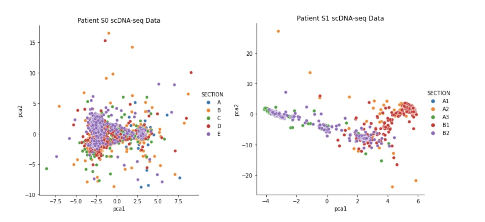

Publications
Computational Method for Tumor Cell Detection in
Single-Cell DNA Sequencing Data
This study aims to develop a computational method, utilizing features computed from low-coverage scDNA-seq, to detect tumor cells and assist in future efforts of identifying technical errors.

Identification of MicroRNAs as Biomarkers for Stress Conditions in Maize (Zea mays)
This study aims to identify miRNAs expressed under different stress conditions in Zea mays and assist in future efforts of constructing artificial miRNA for stress tolerances in plants, providing knowledge of novel miRNAs.